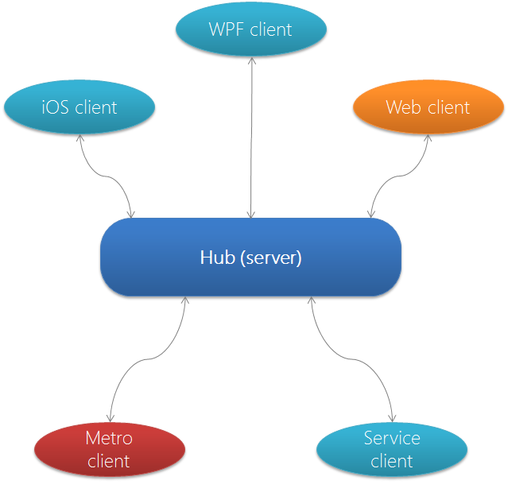

Programming C#
Florian Rappl, Department of Theoretical Physics, University of Regensburg
Programming C#
Day 8: Project management with Visual Studio, sample projects, other technologies
Content
The solution explorer
Managing projects
Build rules and events
Using hardware acceleration in WPF
Building dynamic webpages with ASP.NET MVC
Creating simple network services
Games with DirectX or OpenGL
WindowsPhone / Windows store apps
The solution explorer
Add or remove project resources
Set compilation options
Manage dependencies
Setup (remote) debugging
Manage projects
Manage projects
A project represents an assembly
There is a huge variety of project templates
Differences: Basic settings, included dependencies, given code
The given code can be a great help
Reduces writing the same code over and over
Also the right target framework is set
Build rules and events
Targets and target CPUs
Debug files
Build order
Generating XML documentation files
Symbols (definitions)
Pre- and post build events
Warning levels
→ Example - Project management
WPF
Framework for GUI, based on XAML
Improved binding and styling capabilities
Hardware acceleration of the GUI
Disadvantage: Startup time and memory footprint
Perfect suited for the new MVVM pattern
Distinction: Visual tree and logical tree
Separation is very important
Model-View-ViewModel
→ Example - WPF
WPF.zip
ASP.NET MVC
ASP introduced the webforms concept
ASP.NET MVC is much closer to the outcome
Very tight control and comfortable flow
Excellent Model-View-Controller implementation
Additionally routes, model helpers, ... included
Very easy to extend and adjust
Model-View-Controller
→ Example - ASP.NET MVC
ASPMVC.zip
SignalR
The .NET-Framework offers many ways of writing network services
Very comfortable and powerful: SignalR
Greatest advantage: works perfect with web apps
Here websockets or some fallback like long polling is used
Easy communication between apps
A collection of clients

→ Example - SignalR
SignalR.zip
Games
Various game engines exist
Well known and very well working: XNA
For 2D gaming one example is SDL.NET
Cross-platform and established: MonoGame
Another interesting cross-platform engine: WAVE
Under Windows we can use DirectX or OpenGL
→ Example - Games
Basic2DPhysics.zip
Windows store apps
C# is one of the official languages for Windows apps
That includes Windows 8, Windows RT, Windows Phone 7 / 8
Windows Store apps are XAML based (like WPF)
However, they can only use the .NET core
They run sandboxed, i.e. with reduced rights
Accessing the filesystem is not (directly) possible
We have to use a new API called WinRT
→ Example - Windows Store apps
WindowsStore.zip
All available presentations
Week 1
Presentation of Monday
Presentation of Tuesday
Presentation of Wednesday
Presentation of Thursday
Presentation of Friday
Week 2
Presentation of Monday
Presentation of Tuesday
Presentation of Wednesday
Presentation of Thursday